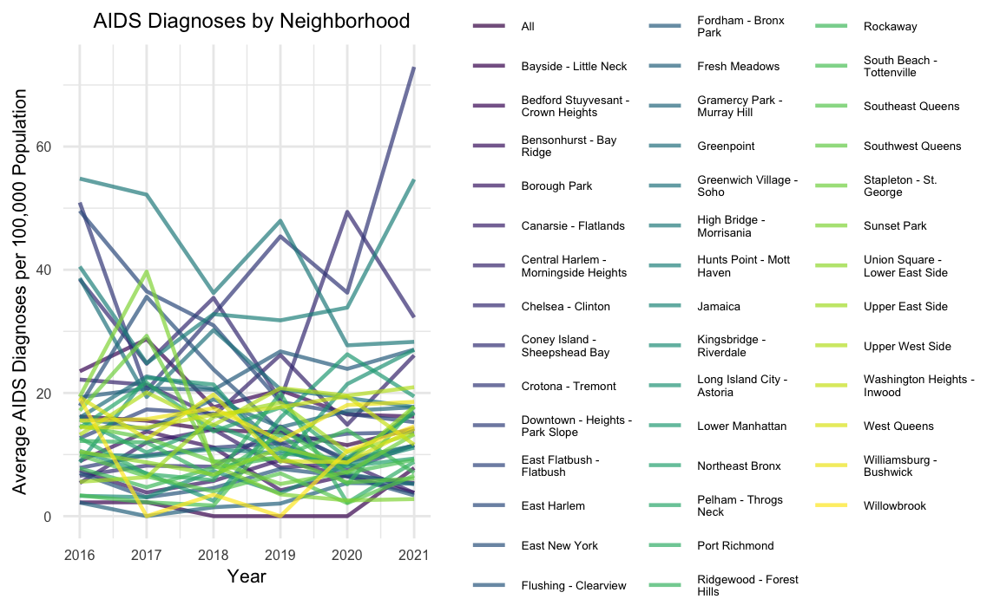
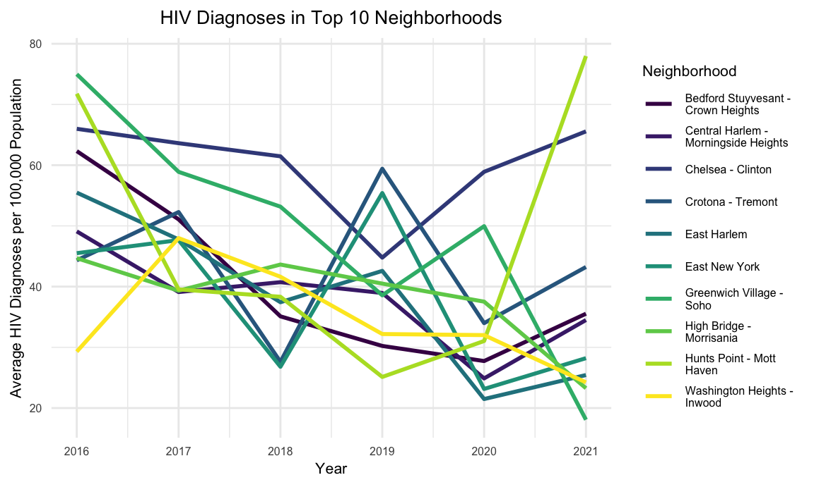
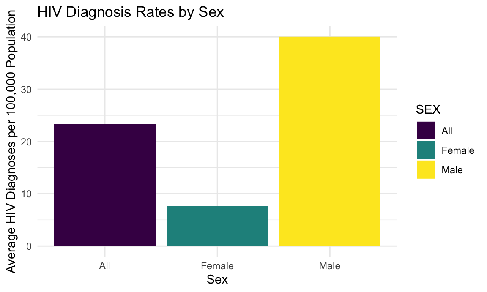
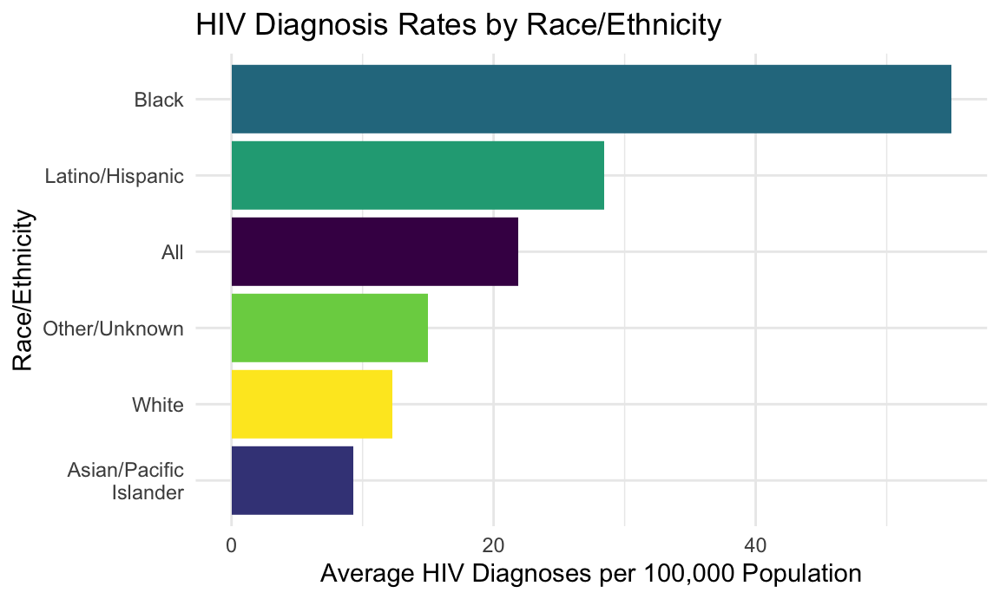
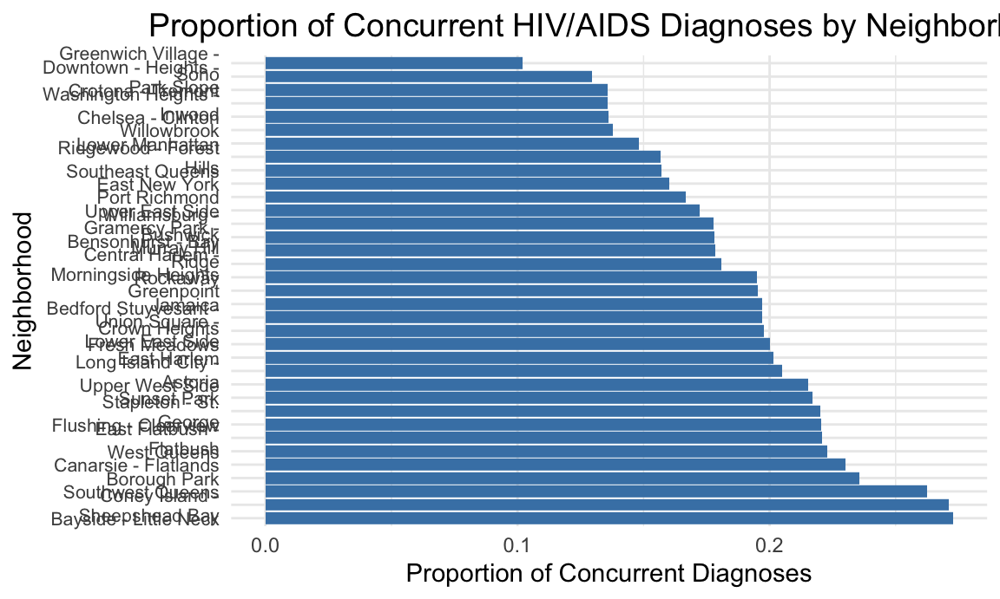

Data Analysis
Alice Mao, Leila Yan
How have HIV and AIDS diagnoses changed over time, and do specific neighborhoods experience disproportionately high rates?
# Aggregate HIV and AIDS diagnoses
hiv_trends <- hiv_data %>%
group_by(YEAR, Neighborhood) %>%
summarise(
avg_hiv_rate = mean(HIV_Diagnoses, na.rm = TRUE),
avg_aids_rate = mean(AIDS_Diagnoses, na.rm = TRUE)
) %>%
ungroup()
# Preview the aggregated data
head(hiv_trends)## # A tibble: 6 × 4
## YEAR Neighborhood avg_hiv_rate avg_aids_rate
## <dbl> <chr> <dbl> <dbl>
## 1 2016 "All" 29.1 16.2
## 2 2016 "Bayside - Little Neck" 2.99 2.23
## 3 2016 "Bedford Stuyvesant -\nCrown Heights" 62.3 23.5
## 4 2016 "Bensonhurst - Bay\nRidge" 14.4 8.93
## 5 2016 "Borough Park" 9.97 7.41
## 6 2016 "Canarsie - Flatlands" 13.4 5.38# Plot HIV diagnosis trends by neighborhood with a legend
ggplot(hiv_trends, aes(x = YEAR, y = avg_hiv_rate, group = Neighborhood, color = Neighborhood)) +
geom_line(size = 0.8, alpha = 0.7) +
labs(
title = "Temporal Trends in HIV Diagnoses by Neighborhood (2016 Onwards)",
x = "Year",
y = "Average HIV Diagnoses per 100,000 Population",
color = "Neighborhood"
) +
theme_minimal() +
theme(
legend.position = "right", # Display the legend on the right
plot.title = element_text(hjust = 0.5),
legend.text = element_text(size = 8),
legend.title = element_text(size = 10)
)
# Calculate the mean HIV diagnosis rate for each neighborhood
top_neighborhoods <- hiv_data %>%
group_by(Neighborhood) %>%
summarise(mean_hiv_rate = mean(HIV_Diagnoses, na.rm = TRUE)) %>%
arrange(desc(mean_hiv_rate)) %>%
slice(1:10) %>%
pull(Neighborhood)
# Filter the dataset for the top 10 neighborhoods
filtered_hiv_data <- hiv_data %>%
filter(Neighborhood %in% top_neighborhoods)
# Aggregate HIV diagnoses for the top 10 neighborhoods
top_hiv_trends <- filtered_hiv_data %>%
group_by(YEAR, Neighborhood) %>%
summarise(
avg_hiv_rate = mean(HIV_Diagnoses, na.rm = TRUE)
) %>%
ungroup()
# Preview the aggregated data
head(top_hiv_trends)## # A tibble: 6 × 3
## YEAR Neighborhood avg_hiv_rate
## <dbl> <chr> <dbl>
## 1 2016 "Bedford Stuyvesant -\nCrown Heights" 62.3
## 2 2016 "Central Harlem -\nMorningside Heights" 49.1
## 3 2016 "Chelsea - Clinton" 66.0
## 4 2016 "Crotona - Tremont" 44.3
## 5 2016 "East Harlem" 55.5
## 6 2016 "East New York" 45.5# Plot HIV diagnosis trends for the top 10 neighborhoods
ggplot(top_hiv_trends, aes(x = YEAR, y = avg_hiv_rate, group = Neighborhood, color = Neighborhood)) +
geom_line(size = 1.2) +
labs(
title = "Temporal Trends in HIV Diagnoses for Top 10 Neighborhoods (2016 Onwards)",
x = "Year",
y = "Average HIV Diagnoses per 100,000 Population",
color = "Neighborhood"
) +
theme_minimal() +
theme(
legend.position = "right",
legend.text = element_text(size = 10),
legend.title = element_text(size = 12),
plot.title = element_text(hjust = 0.5, size = 14)
)
# Plot AIDS diagnosis trends by neighborhood with a legend
ggplot(hiv_trends, aes(x = YEAR, y = avg_aids_rate, group = Neighborhood, color = Neighborhood)) +
geom_line(size = 0.8, alpha = 0.7) +
labs(
title = "Temporal Trends in AIDS Diagnoses by Neighborhood (2016 Onwards)",
x = "Year",
y = "Average AIDS Diagnoses per 100,000 Population",
color = "Neighborhood"
) +
theme_minimal() +
theme(
legend.position = "right", # Display the legend on the right
plot.title = element_text(hjust = 0.5),
legend.text = element_text(size = 8),
legend.title = element_text(size = 10)
)
# Calculate mean rates for each neighborhood
top_hiv_neighborhoods <- hiv_data %>%
group_by(Neighborhood) %>%
summarise(mean_hiv_rate = mean(HIV_Diagnoses, na.rm = TRUE)) %>%
arrange(desc(mean_hiv_rate)) %>%
slice(1:10) %>%
pull(Neighborhood)
top_aids_neighborhoods <- hiv_data %>%
group_by(Neighborhood) %>%
summarise(mean_aids_rate = mean(AIDS_Diagnoses, na.rm = TRUE)) %>%
arrange(desc(mean_aids_rate)) %>%
slice(1:10) %>%
pull(Neighborhood)
# Filter the dataset for top 10 neighborhoods
filtered_hiv_trends <- hiv_data %>%
filter(Neighborhood %in% top_hiv_neighborhoods) %>%
group_by(YEAR, Neighborhood) %>%
summarise(avg_hiv_rate = mean(HIV_Diagnoses, na.rm = TRUE)) %>%
ungroup()
filtered_aids_trends <- hiv_data %>%
filter(Neighborhood %in% top_aids_neighborhoods) %>%
group_by(YEAR, Neighborhood) %>%
summarise(avg_aids_rate = mean(AIDS_Diagnoses, na.rm = TRUE)) %>%
ungroup()
# Plot HIV diagnosis trends
ggplot(filtered_hiv_trends, aes(x = YEAR, y = avg_hiv_rate, group = Neighborhood, color = Neighborhood)) +
geom_line(size = 1) +
labs(
title = "Temporal Trends in HIV Diagnoses (Top 10 Neighborhoods, 2016 Onwards)",
x = "Year",
y = "Average HIV Diagnoses per 100,000 Population",
color = "Neighborhood"
) +
theme_minimal() +
theme(
legend.position = "right", # Display legend
plot.title = element_text(hjust = 0.5),
legend.text = element_text(size = 8),
legend.title = element_text(size = 10)
)
# Fit a linear regression model for year predicting HIV diagnosis rates
hiv_lm <- lm(avg_hiv_rate ~ YEAR, data = hiv_trends)
# Summarize the regression model
hiv_lm_summary <- summary(hiv_lm)
# Display regression coefficients
tidy(hiv_lm) %>%
select(term, estimate, std.error, p.value) %>%
mutate(p.value = format(p.value, scientific = TRUE)) %>% # Show exact p-value in scientific notation
knitr::kable(digits = 10)| term | estimate | std.error | p.value |
|---|---|---|---|
| (Intercept) | 4025.661917 | 1090.0683353 | 2.708677e-04 |
| YEAR | -1.982152 | 0.5400386 | 2.947053e-04 |
# Identify neighborhoods with consistently high HIV diagnosis rates
high_hiv_neighborhoods <- hiv_trends %>%
group_by(Neighborhood) %>%
summarise(mean_hiv_rate = mean(avg_hiv_rate, na.rm = TRUE)) %>%
arrange(desc(mean_hiv_rate)) %>%
filter(mean_hiv_rate > quantile(mean_hiv_rate, 0.9)) # Top 10% neighborhoods
# Display the neighborhoods with high HIV rates
high_hiv_neighborhoods %>%
knitr::kable(digits = 2)| Neighborhood | mean_hiv_rate |
|---|---|
| Chelsea - Clinton | 60.05 |
| Greenwich Village - | |
| Soho | 48.94 |
| Hunts Point - Mott | |
| Haven | 47.29 |
| Crotona - Tremont | 43.47 |
| Bedford Stuyvesant - | |
| Crown Heights | 40.33 |
tidy(hiv_lm) %>%
select(term, estimate, std.error, p.value) %>%
mutate(p.value = format(p.value, scientific = TRUE)) %>% # Show exact p-value in scientific notation
knitr::kable(digits = 10)| term | estimate | std.error | p.value |
|---|---|---|---|
| (Intercept) | 4025.661917 | 1090.0683353 | 2.708677e-04 |
| YEAR | -1.982152 | 0.5400386 | 2.947053e-04 |
Conclusion
The analysis of temporal trends in HIV diagnoses demonstrates a
significant downward trend in diagnosis rates from 2016 onward. The
linear regression model revealed a slope of -1.982, indicating an
average annual decrease of approximately 1.98 HIV diagnoses per 100,000
population. The p-value for the YEAR variable was lower
than 0.05, indicating a statistically significant evidence against the
null hypothesis and confirming that the observed trend is not due to
random variation. However, neighborhood-level disparities remain a
significant concern. Analysis of outlier neighborhoods highlighted that
certain areas consistently reported significantly higher HIV diagnosis
rates.
Are there significant disparities in HIV/AIDS diagnoses across sex and race/ethnicity?
# Group by sex and calculate average HIV diagnoses
hiv_by_sex <- hiv_data %>%
group_by(SEX) %>%
summarise(avg_hiv_rate = mean(HIV_Diagnoses, na.rm = TRUE)) %>%
arrange(desc(avg_hiv_rate))
# Group by race/ethnicity and calculate average HIV diagnoses
hiv_by_race <- hiv_data %>%
group_by(RACE.ETHNICITY) %>%
summarise(avg_hiv_rate = mean(HIV_Diagnoses, na.rm = TRUE)) %>%
arrange(desc(avg_hiv_rate))
# Display the summaries
hiv_by_sex %>%
knitr::kable(digits = 2, caption = "Average HIV Diagnosis Rates by Sex")| SEX | avg_hiv_rate |
|---|---|
| Male | 40.07 |
| All | 23.29 |
| Female | 7.62 |
hiv_by_race %>%
knitr::kable(digits = 2, caption = "Average HIV Diagnosis Rates by Race/Ethnicity")| RACE.ETHNICITY | avg_hiv_rate |
|---|---|
| Black | 54.93 |
| Latino/Hispanic | 28.41 |
| All | 21.89 |
| Other/Unknown | 14.97 |
| White | 12.28 |
| Asian/Pacific | |
| Islander | 9.30 |
# Bar plot for HIV diagnosis rates by sex
ggplot(hiv_by_sex, aes(x = SEX, y = avg_hiv_rate, fill = SEX)) +
geom_bar(stat = "identity") +
labs(
title = "HIV Diagnosis Rates by Sex",
x = "Sex",
y = "Average HIV Diagnoses per 100,000 Population"
) +
theme_minimal()
# Bar plot for HIV diagnosis rates by race/ethnicity
ggplot(hiv_by_race, aes(x = reorder(RACE.ETHNICITY, avg_hiv_rate), y = avg_hiv_rate, fill = RACE.ETHNICITY)) +
geom_bar(stat = "identity") +
coord_flip() + # Flip for better readability
labs(
title = "HIV Diagnosis Rates by Race/Ethnicity",
x = "Race/Ethnicity",
y = "Average HIV Diagnoses per 100,000 Population"
) +
theme_minimal() +
theme(legend.position = "none")
# Fit a linear regression model for HIV diagnosis rates
hiv_lm <- lm(HIV_Diagnoses ~ SEX + RACE.ETHNICITY, data = hiv_data)
# Summarize the regression model
hiv_lm_summary <- summary(hiv_lm)
# Display regression coefficients
tidy(hiv_lm) %>%
select(term, estimate, std.error, p.value) %>%
mutate(p.value = format(p.value, scientific = TRUE)) %>%
knitr::kable(digits = 3, caption = "Linear Regression: Predicting HIV Diagnoses")| term | estimate | std.error | p.value |
|---|---|---|---|
| (Intercept) | 21.537 | 1.129 | 7.275877e-79 |
| SEXFemale | -15.674 | 0.977 | 1.064319e-56 |
| SEXMale | 16.746 | 0.978 | 3.474420e-64 |
| RACE.ETHNICITYAsian/Pacific | |||
| Islander | -12.565 | 1.383 | 1.364801e-19 |
| RACE.ETHNICITYBlack | 33.035 | 1.382 | 1.065960e-120 |
| RACE.ETHNICITYLatino/Hispanic | 6.513 | 1.382 | 2.506124e-06 |
| RACE.ETHNICITYOther/Unknown | -6.854 | 1.384 | 7.514098e-07 |
| RACE.ETHNICITYWhite | -9.611 | 1.382 | 3.951311e-12 |
# Fit a multivariate regression model adjusting for year and neighborhood
hiv_multivariate_lm <- lm(HIV_Diagnoses ~ SEX + RACE.ETHNICITY + YEAR + Neighborhood..U.H.F., data = hiv_data)
# Summarize the multivariate regression model
tidy(hiv_multivariate_lm) %>%
select(term, estimate, std.error, p.value) %>%
mutate(p.value = format(p.value, scientific = TRUE)) %>%
knitr::kable(digits = 10, caption = "Multivariate Regression: Adjusting for Confounders")| term | estimate | std.error | p.value |
|---|---|---|---|
| (Intercept) | 4432.71461404 | 449.3360454 | 8.795901e-23 |
| SEXFemale | -15.68201860 | 0.9077399 | 2.675863e-65 |
| SEXMale | 16.77128266 | 0.9084285 | 4.601996e-74 |
| RACE.ETHNICITYAsian/Pacific | |||
| Islander | -12.53216867 | 1.2842262 | 2.485694e-22 |
| RACE.ETHNICITYBlack | 33.03541667 | 1.2835774 | 1.224881e-138 |
| RACE.ETHNICITYLatino/Hispanic | 6.51319444 | 1.2835774 | 4.007529e-07 |
| RACE.ETHNICITYOther/Unknown | -6.80542575 | 1.2852104 | 1.231332e-07 |
| RACE.ETHNICITYWhite | -9.61061508 | 1.2835774 | 8.042352e-14 |
| YEAR | -2.18592344 | 0.2225841 | 1.357711e-22 |
| Neighborhood..U.H.F.Bayside - Little Neck | -19.20383598 | 2.7728440 | 4.792543e-12 |
| Neighborhood..U.H.F.Bedford Stuyvesant - | |||
| Crown Heights | 16.44298942 | 2.7728440 | 3.198223e-09 |
| Neighborhood..U.H.F.Bensonhurst - Bay | |||
| Ridge | -10.85383598 | 2.7728440 | 9.165992e-05 |
| Neighborhood..U.H.F.Borough Park | -11.53240741 | 2.7728440 | 3.240344e-05 |
| Neighborhood..U.H.F.Canarsie - Flatlands | -7.90859788 | 2.7728440 | 4.357176e-03 |
| Neighborhood..U.H.F.Central Harlem - | |||
| Morningside Heights | 13.92870370 | 2.7728440 | 5.227528e-07 |
| Neighborhood..U.H.F.Chelsea - Clinton | 37.79933862 | 2.7728440 | 1.077335e-41 |
| Neighborhood..U.H.F.Coney Island - | |||
| Sheepshead Bay | -8.42843915 | 2.7728440 | 2.378862e-03 |
| Neighborhood..U.H.F.Crotona - Tremont | 20.02632275 | 2.7728440 | 5.746986e-13 |
| Neighborhood..U.H.F.Downtown - Heights - | |||
| Park Slope | -5.12208995 | 2.7728440 | 6.476261e-02 |
| Neighborhood..U.H.F.East Flatbush - | |||
| Flatbush | 7.24298942 | 2.7728440 | 9.020841e-03 |
| Neighborhood..U.H.F.East Harlem | 13.86283069 | 2.7728440 | 5.911480e-07 |
| Neighborhood..U.H.F.East New York | 13.60568783 | 2.7728440 | 9.504068e-07 |
| Neighborhood..U.H.F.Flushing - Clearview | -6.32843915 | 2.7728440 | 2.250702e-02 |
| Neighborhood..U.H.F.Fordham - Bronx | |||
| Park | 5.12235450 | 2.7728440 | 6.474879e-02 |
| Neighborhood..U.H.F.Fresh Meadows | -12.24431217 | 2.7728440 | 1.024087e-05 |
| Neighborhood..U.H.F.Gramercy Park - | |||
| Murray Hill | 2.72949735 | 2.7728440 | 3.249746e-01 |
| Neighborhood..U.H.F.Greenpoint | -3.84748677 | 2.7728440 | 1.653228e-01 |
| Neighborhood..U.H.F.Greenwich Village - | |||
| Soho | 26.99457672 | 2.7728440 | 3.112492e-22 |
| Neighborhood..U.H.F.High Bridge - | |||
| Morrisania | 15.97314815 | 2.7728440 | 8.800065e-09 |
| Neighborhood..U.H.F.Hunts Point - Mott | |||
| Haven | 22.19158295 | 2.8216877 | 4.359583e-15 |
| Neighborhood..U.H.F.Jamaica | -4.85621693 | 2.7728440 | 7.993703e-02 |
| Neighborhood..U.H.F.Kingsbridge - | |||
| Riverdale | -10.76335979 | 2.7728440 | 1.048418e-04 |
| Neighborhood..U.H.F.Long Island City - | |||
| Astoria | 6.80886243 | 2.7728440 | 1.409505e-02 |
| Neighborhood..U.H.F.Lower Manhattan | 4.43902116 | 2.7728440 | 1.094538e-01 |
| Neighborhood..U.H.F.Northeast Bronx | -6.00304233 | 2.7728440 | 3.043161e-02 |
| Neighborhood..U.H.F.Pelham - Throgs | |||
| Neck | 0.05886243 | 2.7728440 | 9.830643e-01 |
| Neighborhood..U.H.F.Port Richmond | -3.28889912 | 2.7919938 | 2.388533e-01 |
| Neighborhood..U.H.F.Ridgewood - Forest | |||
| Hills | 3.78822751 | 2.7728440 | 1.719311e-01 |
| Neighborhood..U.H.F.Rockaway | -8.49748677 | 2.7728440 | 2.189761e-03 |
| Neighborhood..U.H.F.South Beach - | |||
| Tottenville | -3.34589947 | 2.7728440 | 2.276081e-01 |
| Neighborhood..U.H.F.Southeast Queens | -10.25383598 | 2.7728440 | 2.192931e-04 |
| Neighborhood..U.H.F.Southwest Queens | -6.01574074 | 2.7728440 | 3.008242e-02 |
| Neighborhood..U.H.F.Stapleton - St. | |||
| George | -6.96177249 | 2.7728440 | 1.207542e-02 |
| Neighborhood..U.H.F.Sunset Park | 2.23743386 | 2.7728440 | 4.197507e-01 |
| Neighborhood..U.H.F.Union Square - | |||
| Lower East Side | 2.01759259 | 2.7728440 | 4.668712e-01 |
| Neighborhood..U.H.F.Upper East Side | -4.82526455 | 2.7728440 | 8.187771e-02 |
| Neighborhood..U.H.F.Upper West Side | -1.96256614 | 2.7728440 | 4.791088e-01 |
| Neighborhood..U.H.F.Washington Heights - | |||
| Inwood | 12.10171958 | 2.7728440 | 1.296321e-05 |
| Neighborhood..U.H.F.West Queens | -3.03796296 | 2.7728440 | 2.732924e-01 |
| Neighborhood..U.H.F.Williamsburg - | |||
| Bushwick | 10.82473545 | 2.7728440 | 9.571857e-05 |
| Neighborhood..U.H.F.Willowbrook | -7.48161376 | 2.7728440 | 6.991656e-03 |
Conclusion
The analysis of demographic disparities in HIV diagnoses revealed
significant differences across sex and race/ethnicity. The linear
regression model identified males as having significantly higher HIV
diagnosis rates than females, with a coefficient of 16.771 for
SEXMale. The p-value for this variable was lower than 0.05,
providing strong statistical evidence that sex is a significant
predictor of HIV diagnoses.
Race and ethnicity were also found to be highly significant
predictors. The coefficients for RACE.ETHNICITYBlack
(33.035) and RACE.ETHNICITYLatino/Hispanic (6.513)
highlight disproportionately high HIV diagnosis rates among Black and
Hispanic populations. The near-zero p-values for these predictors
confirm that the observed disparities are not due to random variation.
These findings align with existing evidence that systemic inequities,
including barriers to healthcare access, economic instability, and
stigma, disproportionately affect these groups.
The multivariate regression model, adjusting for confounders such as year and neighborhood, confirmed the robustness of these disparities. Even after controlling for these factors, the p-values for sex and race/ethnicity remained small, showing that these disparities are deeply rooted in structural and systemic inequities rather than purely geographic or temporal differences.
What is the proportion of concurrent HIV/AIDS diagnoses among total HIV diagnoses, and how does this vary by neighborhood and demographic group?
# create summary data for concurrent HIV/AIDS diagnosis
summary_data <- Merged_HIV_UHF_Data %>%
group_by(uhf_label, sex, race_ethnicity) %>%
summarize(
total_concurrent_hiv_aids = sum(total_number_of_concurrent_hiv_aids_diagnoses, na.rm = TRUE),
total_hiv_diagnoses = sum(total_number_of_hiv_diagnoses, na.rm = TRUE),
proportion_concurrent = total_concurrent_hiv_aids / total_hiv_diagnoses
) %>%
arrange(desc(proportion_concurrent))# Fit the linear regression model
lm_model <- lm(proportion_concurrent ~ uhf_label + sex + race_ethnicity, data = summary_data)
# Summary of the linear regression model
summary(lm_model)##
## Call:
## lm(formula = proportion_concurrent ~ uhf_label + sex + race_ethnicity,
## data = summary_data)
##
## Residuals:
## Min 1Q Median 3Q Max
## -0.31457 -0.08388 -0.00526 0.05930 0.82539
##
## Coefficients:
## Estimate Std. Error t value Pr(>|t|)
## (Intercept) 1.624e-01 3.208e-02 5.063 5.61e-07
## uhf_label 9.565e-05 7.643e-05 1.251 0.211331
## sexFemale 1.650e-02 1.968e-02 0.838 0.402166
## sexMale -9.755e-03 1.850e-02 -0.527 0.598212
## race_ethnicityAsian/Pacific\nIslander 3.167e-02 2.668e-02 1.187 0.235766
## race_ethnicityBlack -2.906e-02 2.578e-02 -1.127 0.260163
## race_ethnicityLatino/Hispanic 7.971e-03 2.565e-02 0.311 0.756116
## race_ethnicityOther/Unknown 1.040e-01 2.967e-02 3.506 0.000491
## race_ethnicityWhite -1.689e-02 2.605e-02 -0.648 0.516952
##
## (Intercept) ***
## uhf_label
## sexFemale
## sexMale
## race_ethnicityAsian/Pacific\nIslander
## race_ethnicityBlack
## race_ethnicityLatino/Hispanic
## race_ethnicityOther/Unknown ***
## race_ethnicityWhite
## ---
## Signif. codes: 0 '***' 0.001 '**' 0.01 '*' 0.05 '.' 0.1 ' ' 1
##
## Residual standard error: 0.1859 on 558 degrees of freedom
## (63 observations deleted due to missingness)
## Multiple R-squared: 0.04472, Adjusted R-squared: 0.03102
## F-statistic: 3.265 on 8 and 558 DF, p-value: 0.001198Model Discussion
The model explains a small proportion of the variability in the data (R-squared = 0.04472), suggesting that other unmeasured factors may play a more significant role. While the model is statistically significant overall (p = 0.001198), the limited explanatory power highlights the need for additional data or variables to better understand disparities in concurrent diagnoses. These findings suggest that, while neighborhood and most demographic factors do not show strong effects, the elevated proportion observed in the “Other/Unknown” group warrants further investigation into potential disparities in healthcare access or reporting.
coeff_table <- summary(lm_model)$coefficients
coeff_table <- as.data.frame(coeff_table)
colnames(coeff_table) <- c("Estimate", "Std. Error", "t value", "Pr(>|t|)")
# Add significance levels
coeff_table$Significance <- cut(coeff_table$`Pr(>|t|)`,
breaks = c(-Inf, 0.001, 0.01, 0.05, 0.1, Inf),
labels = c("***", "**", "*", ".", " "))
# View the coefficient table
print(coeff_table)## Estimate Std. Error t value
## (Intercept) 1.624272e-01 3.207920e-02 5.0633198
## uhf_label 9.564643e-05 7.643449e-05 1.2513516
## sexFemale 1.649985e-02 1.968022e-02 0.8383979
## sexMale -9.754848e-03 1.850047e-02 -0.5272756
## race_ethnicityAsian/Pacific\nIslander 3.166751e-02 2.668053e-02 1.1869146
## race_ethnicityBlack -2.905533e-02 2.577765e-02 -1.1271521
## race_ethnicityLatino/Hispanic 7.971156e-03 2.565235e-02 0.3107379
## race_ethnicityOther/Unknown 1.040319e-01 2.967142e-02 3.5061315
## race_ethnicityWhite -1.689113e-02 2.604795e-02 -0.6484631
## Pr(>|t|) Significance
## (Intercept) 5.605625e-07 ***
## uhf_label 2.113306e-01
## sexFemale 4.021663e-01
## sexMale 5.982118e-01
## race_ethnicityAsian/Pacific\nIslander 2.357664e-01
## race_ethnicityBlack 2.601627e-01
## race_ethnicityLatino/Hispanic 7.561159e-01
## race_ethnicityOther/Unknown 4.912382e-04 ***
## race_ethnicityWhite 5.169522e-01ggplot(summary_data, aes(x = uhf_label, y = proportion_concurrent, color = race_ethnicity)) +
geom_point(size = 2, alpha = 0.8) + # Keep points for visibility
facet_wrap(~ sex, scales = "free_y") + # Separate panels for each sex
labs(
title = "Proportion of Concurrent HIV/AIDS Diagnoses by Neighborhood and Demographics",
x = "Neighborhood (UHF Label)",
y = "Proportion of Concurrent Diagnoses",
color = "Race/Ethnicity"
) +
theme_minimal() +
theme(
axis.text.x = element_text(angle = 45, hjust = 1),
plot.title = element_text(hjust = 0.5, size = 14),
legend.title = element_text(size = 12),
legend.text = element_text(size = 10)
) +
scale_color_brewer(palette = "Set1")
Pattern Discussion
By Sex:
In the “Female” and “Male” categories, the distribution of concurrent diagnoses appears similar in variation but may differ slightly in range and clustering. Men exhibit a slightly broader range in some neighborhoods compared to women.
By Race/Ethnicity:
Black and Latino/Hispanic populations have higher proportions of concurrent diagnoses in several neighborhoods compared to White or Asian/Pacific Islander populations. Other/Unknown groups show wide variability, likely influenced by limited data or inconsistent categorization.
Certain racial/ethnic groups (e.g., White or Asian/Pacific Islander) appear clustered at lower proportions in many neighborhoods.
# neighborhood summary
neighborhood_summary <- Merged_HIV_UHF_Data %>%
group_by(neighborhood_u_h_f) %>%
summarize(
total_concurrent_hiv_aids = sum(total_number_of_concurrent_hiv_aids_diagnoses, na.rm = TRUE),
total_hiv_diagnoses = sum(total_number_of_hiv_diagnoses, na.rm = TRUE),
proportion_concurrent = total_concurrent_hiv_aids / total_hiv_diagnoses
) %>%
arrange(desc(proportion_concurrent))
print(neighborhood_summary)## # A tibble: 35 × 4
## neighborhood_u_h_f total_concurrent_hiv_a…¹ total_hiv_diagnoses
## <chr> <int> <int>
## 1 "Bayside - Little Neck" 12 44
## 2 "Coney Island -\nSheepshead Bay" 180 664
## 3 "Southwest Queens" 272 1036
## 4 "Borough Park" 116 492
## 5 "Canarsie - Flatlands" 220 956
## 6 "West Queens" 612 2744
## 7 "East Flatbush -\nFlatbush" 512 2320
## 8 "Flushing - Clearview" 112 508
## 9 "Stapleton - St.\nGeorge" 88 400
## 10 "Sunset Park" 92 424
## # ℹ 25 more rows
## # ℹ abbreviated name: ¹total_concurrent_hiv_aids
## # ℹ 1 more variable: proportion_concurrent <dbl># visualization of Proportion of Concurrent HIV/AIDS Diagnoses by Neighborhood
ggplot(neighborhood_summary, aes(x = reorder(neighborhood_u_h_f, -proportion_concurrent), y = proportion_concurrent)) +
geom_bar(stat = "identity", fill = "steelblue") +
coord_flip() +
labs(
title = "Proportion of Concurrent HIV/AIDS Diagnoses by Neighborhood",
x = "Neighborhood",
y = "Proportion of Concurrent Diagnoses"
) +
theme_minimal() +
theme(
axis.text.y = element_text(size = 8),
plot.title = element_text(hjust = 0.5, size = 14)
)
Pattern Discussion
The neighborhoods are ranked by their proportions, with Greenwich Village-Downtown having the lowest proportion and Sheepshead Bay the highest. The visualization highlights geographic variability in concurrent diagnoses, suggesting that certain neighborhoods may face distinct challenges in early detection or healthcare access.